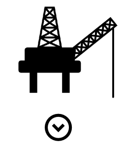
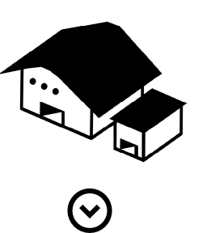
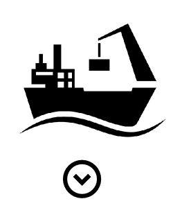
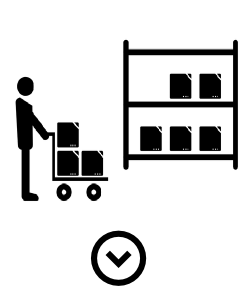

|  | 1. PRODUCTION
Tout commence avec l’extraction ou la production de la matière première : la plateforme pétrolière, les mines ou les champs de blé ou de coton. C’est ce qu’on appelle l’Upstream, l’amont du cycle. |
| Les compagnies de trading passent des accords d’enlèvements avec les propriétaires, que ce soient des acteurs privés ou des États. Ce qui permet aux négociants de sécuriser leurs approvisionnements futurs et garantir les prix. |
|  | 2. STOCKAGE
On rentre dans la partie dite Midstream, le milieu de chaîne, qui concerne à la fois le stockage (terminaux, entrepôts de stockage, silos, etc.) et le transport des marchandises. |
| C’est ici que le rôle du trader est le plus important, là sa grande connaissance de la logistique combinée à son expertise des mécanismes financiers va lui faire gagner ou perdre le plus d'argent. Le trader va pratiquer ce qu’on appelle des arbitrages. Son objectif : que les marchandises arrivent dans les zones de consommation, au bon endroit au bon moment, pour être vendues aux meilleurs prix pour lui. Il va jouer sur les opportunités et les différences de prix, n’hésitant pas à stocker la matière première pour la revendre plus tard en fonction des cours. |
|  | 3. TRANSPORT
Les matières premières sont acheminées via le réseau portuaire, par des tankers ou des vraquiers. |
| Les négociants connaissent également très bien l’environnement législatif mondial et les normes étatiques : ils savent jouer avec. Ils doivent aussi jongler avec les facteurs géopolitiques souvent imprévisibles (comme en Ukraine en ce moment), voire climatiques pour les matières premières agricoles. Dans cette gestion du transport, la question de la sécurité et du respect des réglementations reste centrale. |
|  | 4. STOCKAGE / TRANSFORMATION / DISTRIBUTION
Vient enfin la phase dite Downstream, c’est-à-dire le temps de la transformation et de distribution. Cela se fera, selon les type de produit, à travers une raffinerie, un réseau de stations-service ou une usine de transformation des aliments. |
| Si Genève est une place centrale dans ce négoce (un tiers du pétrole mondial), c’est que la ville combine plusieurs compétences-clés : la banque, le shipping, la surveillance et sécurité, ainsi que les services de conseils juridiques. |